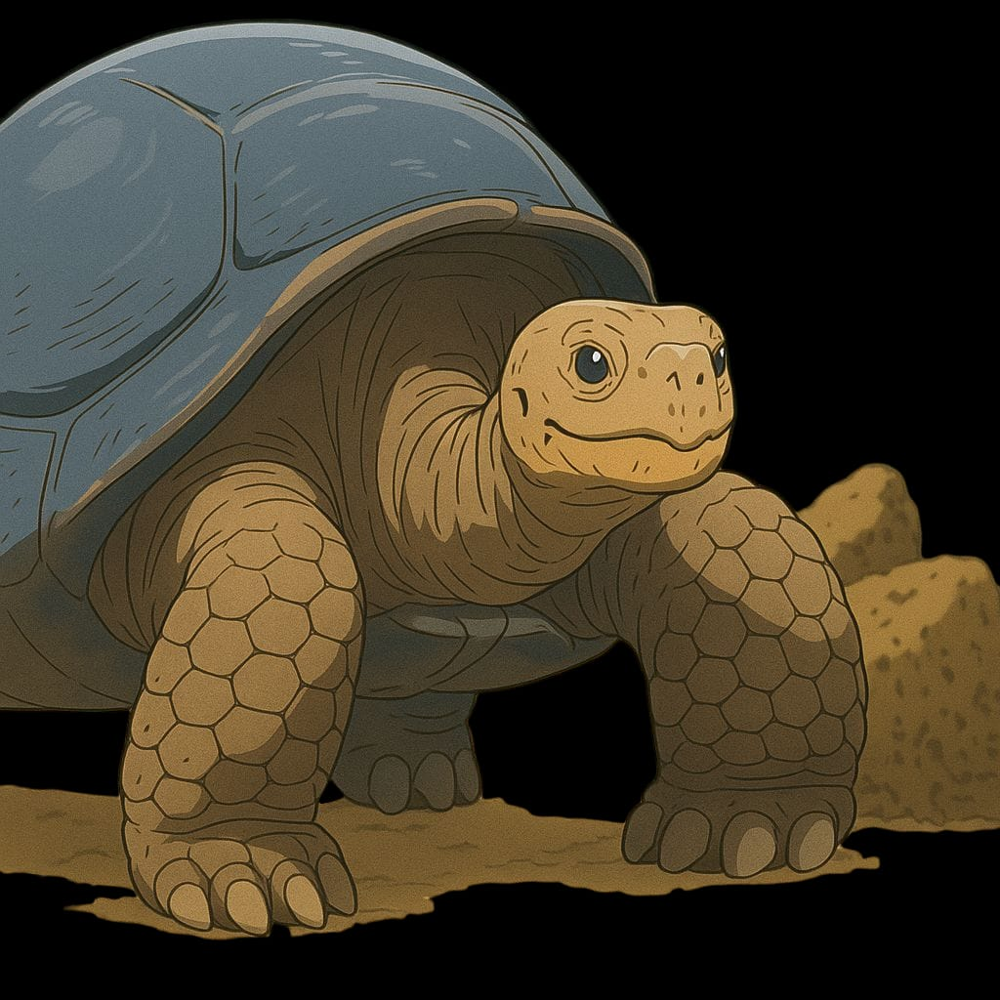
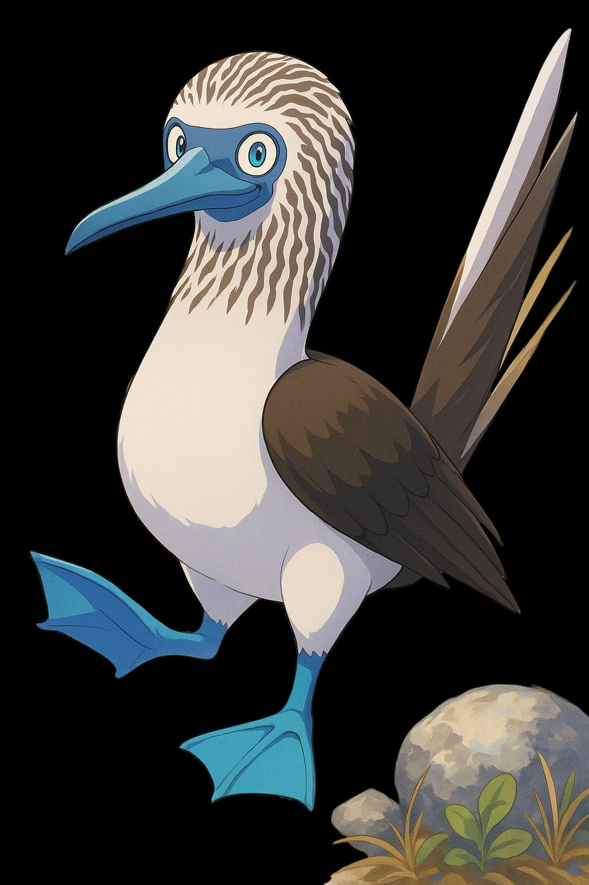
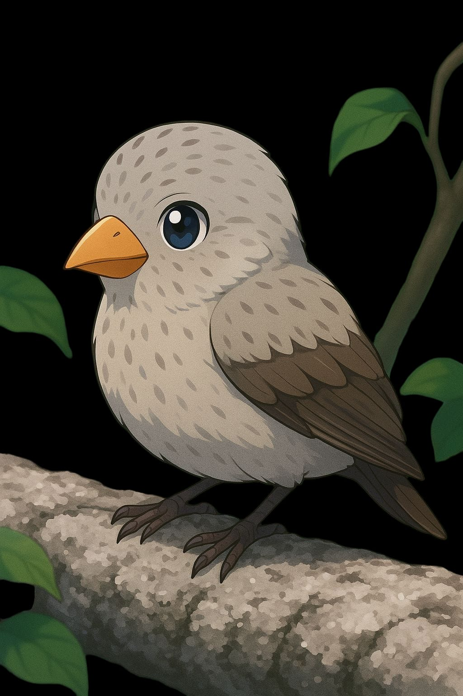
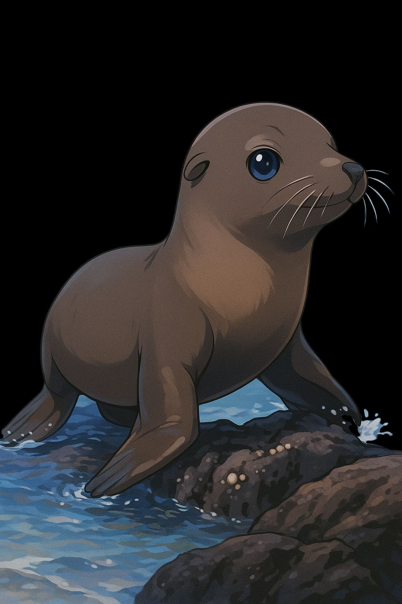
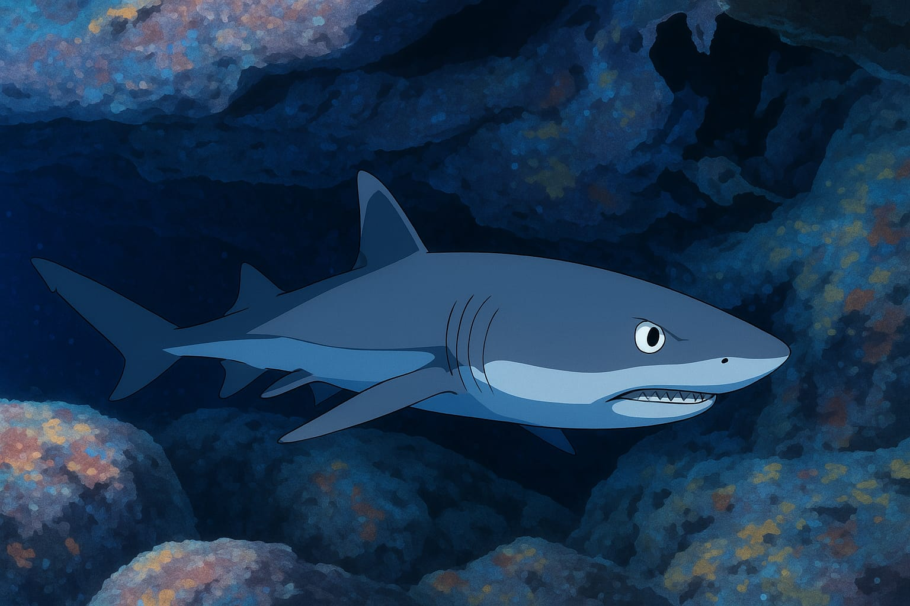

Tortuga gigante de Galápagos (Chelonoidis spp.)
- Hábitat: Zonas áridas, bosques de matorral y zonas altas húmedas de varias islas.
- Son los reptiles terrestres más grandes del mundo.
- Llegan a vivir más de 100 años.
- Cada isla tiene su propia subespecie de tortuga.
- Gravemente afectadas por la caza en el pasado y por especies invasoras como ratas y cabras.

Piquero de patas azules (Sula nebouxii)
- Hábitat: Zonas costeras rocosas, acantilados y playas arenosas.
- Famoso por el brillante color azul de sus patas, que utiliza en su baile de cortejo: levantan exageradamente los pies para atraer pareja.
- Se alimenta de peces, lanzándose en picada desde el aire hacia el mar (pesca espectacular).
- Anidan en el suelo, en colonias, haciendo un pequeño raspado en la arena como nido.
- Aunque también viven en otras zonas del Pacífico, en Galápagos su población es especialmente densa y característica

Pinzones de Darwin (Geospiza spp.)
- Hábitat: Bosques secos, zonas arbustivas, bosques de altura.
- Son 15 especies diferentes adaptadas a distintos alimentos (semillas, insectos, néctar).
- Inspiraron a Charles Darwin para su teoría de la evolución por selección natural.

Lobo marino de Galápagos (Zalophus wollebaeki)
- Hábitat: Playas de arena, costas rocosas, zonas de manglar.
- Son muy sociables y curiosos con los humanos.
- Se alimentan de peces y calamares.
- Sus colonias son ruidosas y muy activas.

Tiburón de punta blanca (Triaenodon obesus)
- Hábitat: Aguas costeras poco profundas, arrecifes y cuevas submarinas.
- Generalmente no agresivo con los humanos.
- Cazador nocturno de peces y moluscos.
- Fundamental en el equilibrio ecológico marino.